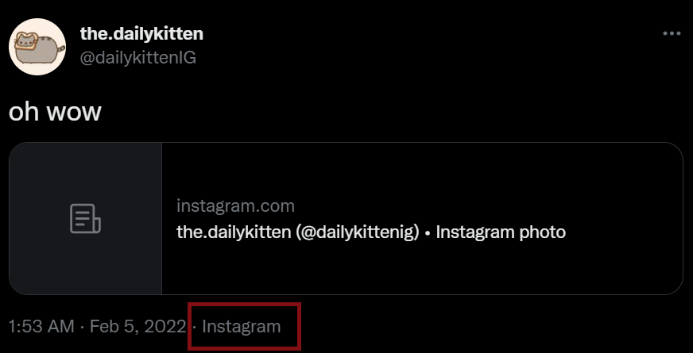

✨🐥 InstaTweet 🐤✨

Automatically Repost Content From Instagram to Twitter
Ever tried sharing an Instagram post to Twitter, only to find out that all you tweeted was a link, and not the actual photo/video?
 Humiliating 🤮
That could be literally anything. Nobody will click it.
InstaTweet shares the actual content of the post. Not just a link to it.
With InstaTweet, you can rest easy knowing that,
although nobody will click the link, they’ll at least see what you posted.
What’s InstaTweet?
InstaTweet is a customizable tool to automatically repost content from Instagram to Twitter.
Simply create a Profile,
configure the Mandatory Settings,
and add_pages() to repost from
from InstaTweet import Profile
# Create a new (local) Profile
>>> profile = Profile('myProfile')
# Configure the mandatory settings (at minimum)
>>> profile.twitter_keys = twitter_api_keys
>>> profile.session_id = '6011991A'
# Add at least one Instagram page (user/hashtag) to repost from
>>> profile.add_pages(['the.dailykitten', '#thedailykitten'])
# Save the Profile [optional]
>>> profile.save()
Saved Local Profile myProfile
Once configured, the Profile can be used to initialize and
start() InstaTweet:
from InstaTweet import InstaTweet
# Directly initialize with a Profile object
>>> insta_tweet = InstaTweet(profile)
# Or load a saved Profile by name
>>> insta_tweet = InstaTweet.load("myProfile")
# Run InstaTweet by calling start()
>>> insta_tweet.start()
From the Docs…
- InstaTweet.start(max_posts=12)[source]View on GitHub
InstaTweets all pages that have been added to the loaded
ProfileThe most recent posts from each page will be scraped, then compared to the
scrapedlist in thePAGE_MAPPINGto determine which are new.Up to
max_postsnew posts from each page will then be downloaded and tweetedNote
If
InstaTweetfails todownload_post()orsend_tweet(), thePAGE_MAPPINGwon’t be updatedThis ensures that failed repost attempts are retried in the next call to
start()
If a save file for the Profile already
exists, successful reposts will trigger a call tosave()- Parameters
max_posts (int) – the maximum number of new posts to download and tweet per page
As InstaTweet runs, its progress will be logged to console:
Starting InstaTweet for Profile: myProfile
Checking posts from @the.dailykitten
...
Checking posts from #thedailykitten
...
Finished insta-tweeting for #thedailykitten
All pages have been insta-tweeted
Okay… But Why? 😟
But Why? 🤨
InstaTweet has two main use cases:
To automatically share your own Instagram posts to Twitter
To automatically tweet new content from other Instagram users/hashtags
Regardless of your intention, InstaTweet will detect new posts from the pages you specify, download them, and repost them to Twitter.
…
Other Use Case: The InstaClient
The package’s custom InstaClient can be used separately to scrape Instagram
from InstaTweet import InstaClient
>>> ig = InstaClient(session_id="kjfdn309wredsfl")
# Scrape Instagram user or hashtag
>>> user = ig.get_user('dailykittenig')
>>> hashtag = ig.get_hashtag('#dailykitten')
>>> print(user, hashtag, sep='\n')
Instagram User: @dailykittenig
Instagram Hashtag: #dailykitten
# Download most recent post
>>> post = user.posts[0]
>>> print(post)
>>> ig.download_post(post)
Post 2981866202934977614 by @dailykittenig on 2022-11-29 01:44:37
Downloaded post https://www.instagram.com/p/Clht4NRrqRO by dailykittenig to C:\path\to\insta-tweet\downloads\2981866202934977614.mp4
…
Installation
To install using pip:
pip install insta-tweet
Please note that InstaTweet requires Python >= 3.8
Documentation
The rest of this README, the API documentation, and snippets can all be found on Read the Docs